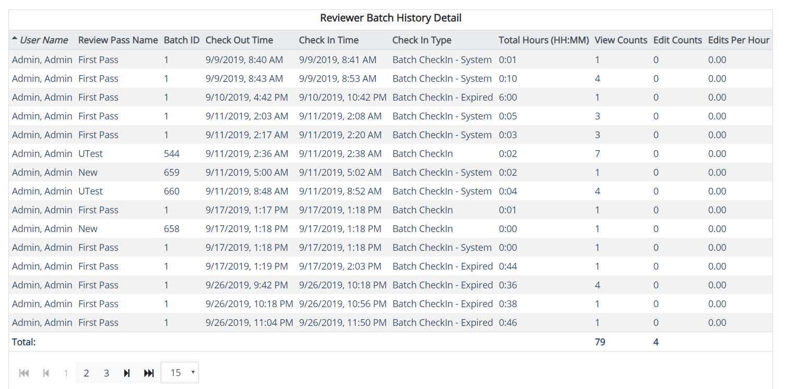

This report provides detailed information on reviewer activities in a given batch, including check out and check in times, view counts, and editing details.
Complete the following selections:
Report Title: A report title is selected by default; change the title if needed.
Start/End Dates: Select the starting and ending dates for the time period of interest by clicking in each field and selecting dates from the resulting calendars.
Use common calendar controls to select the correct dates and/or clear your selection.
